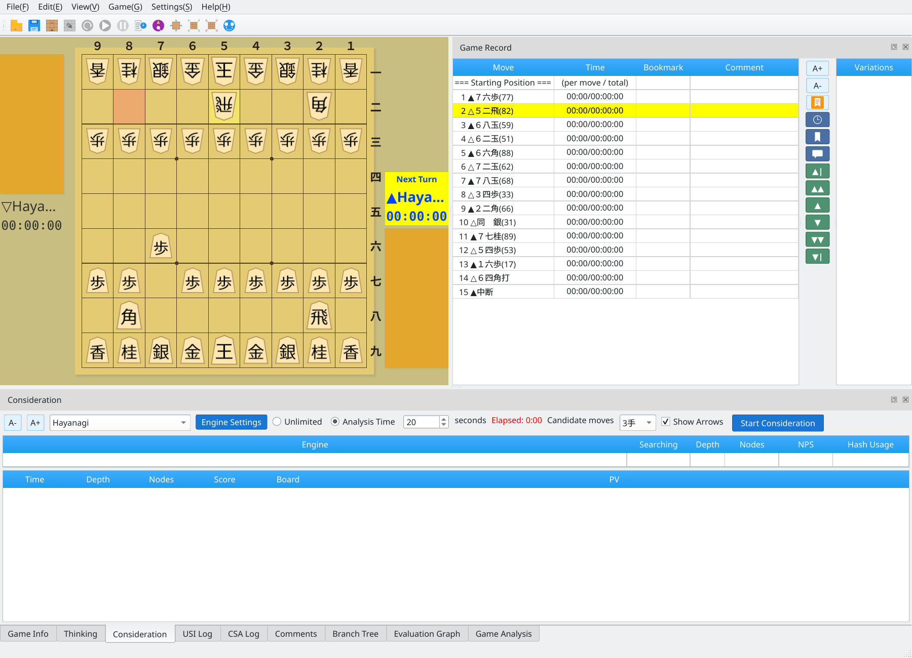
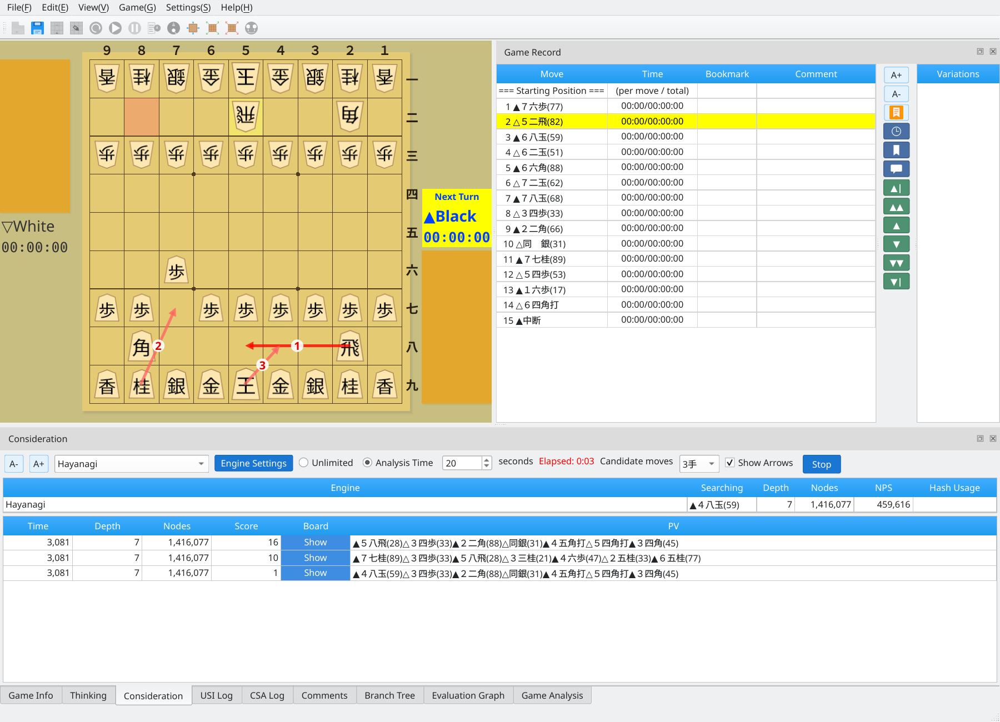
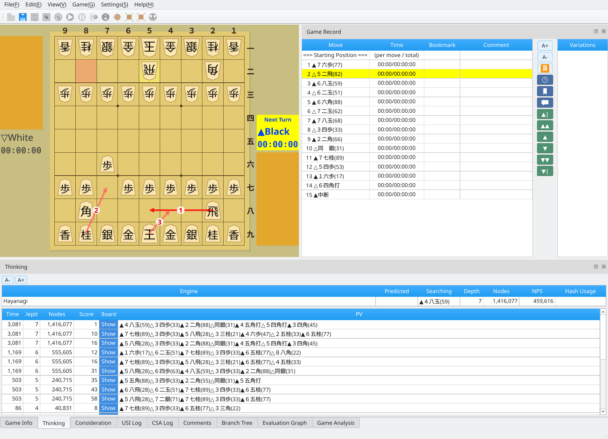
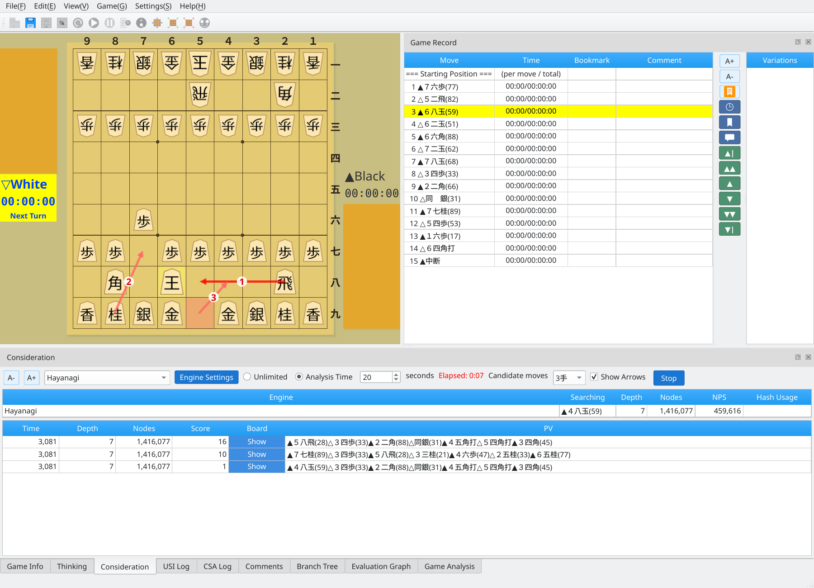

Analyze candidate moves from any position with an engine
Screenshots were captured on Linux with the English interface.
Set analysis options in the Consideration tab
The Consideration tab lets you set:
After configuring the options, click Start Consideration to begin.

Consideration tab: choose an engine, time limit, and number of candidates
View candidate moves and principal variations in real time
Once analysis starts, the Consideration tab displays the engine's candidate moves, evaluation scores, and principal variations in real time.

Analysis in progress: live candidate moves, scores, and principal variations
Ranked arrows on the board show the engine's candidate moves, making it easy to see their order and identify the best move.

Candidate move arrows: ranked arrows displayed directly on the board
The Thinking tab shows detailed engine information in real time, including evaluation scores, search depth, node counts, and principal variations.
Thinking tab: detailed engine information updated in real time
Select another move in the game record to continue your analysis
Click another move in the move list to switch to that position and continue analysis. You can explore positions of interest one after another.

Continue analysis: click another move in the game record